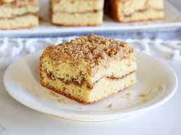

Coffee Crumble Cake

The perfect copy cat recipe of the infamous coffee cake at Starbucks.
This perfect goodness will having your family begging for me. Made with
everything you love and without things that you don't
Ingredients
- 1 cup of Ripple Milk
- 1 tbsp of apple cider vinegar
- 16 tbsp of butter(vegan)
- 1 cup of sugar
- 6 tbsp of just egg
- 1 tbsp of vanilla
- 2 1/2 cups of flour
- 1/2 cup of cornstarch
- 1 tbsp of baking powder
- 1 tsp of salt
- 1/2 cup of brown sugar
- 2 tsp of cinnamon
Steps:
- Add to a measuring glass, add 1 cup of milk and 1 tbsp of vinegar.
Then set aside.
- In a bowl add 9 tbsp of butter, 1 cup of sugar, then mix. Add
3 tbsp of egg, mix, then add 3 more tbsp of egg mix again.
Add 1 tbsp of vanilla in the bowl- mix
- In a sifter add 1 1/2 cup of flour, 1 tbsp of baking powder, 1 tsp of salt,
and 1/2 cup of cornstarch then sift in bowl - Mix.
- Add milk set to the side - Mix
- in a separtate bowl add 1/2 cup of brown sugar,
1 cup of plain flour, 2 tsp of cinnamon,
and mix with a fork. Then add 7 tbsp of butter, and mix w/ a fork.
This is the streusal.
- Pour in the batter, then some streusal, then more batter,
and top w/ streusal.
- Bake for 45 minutes at 340°.